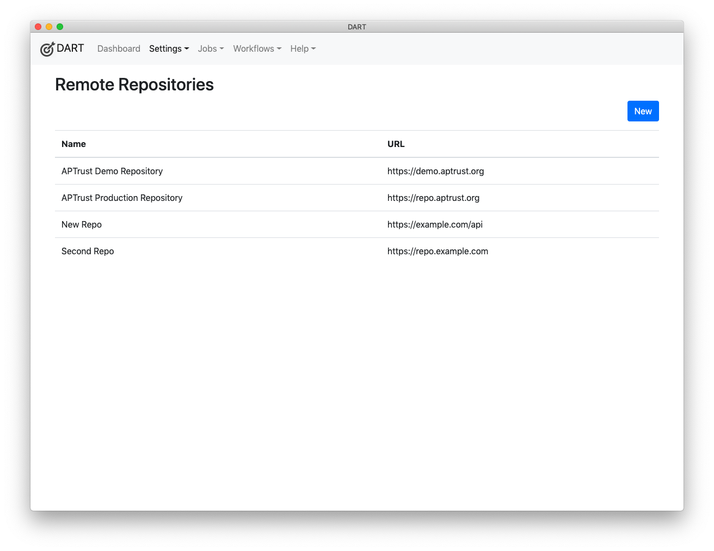

Remote Repositories
Remote repositories are services to which you upload data for preservation. DART can query remote repositories to show the status of items you've uploaded for ingest, provided the following three conditions are met:
- The remote repository has a REST API. Most do, including APTrust, Fedora, DSpace, and many others.
- DART has a plugin that knows how to talk to the repository. (On initial release, the only plugin is for APTrust, but more may be coming.)
- You have a Remote Repository setting that points to the correct URL and contains valid login credentials.
Listing Remote Repositories
To view the list of Remote Repository settings, choose Settings > Remote Repositories from the menu.

Editing Remote Repositories
Click on any repository in the list to edit it, or click the New button to create a new one.
Description of Settings
Name
The name of the remote repository. This is required. It can be anything you want, and chaning it will not affect the behavior or availability of the repository.
URL
The base URL of the repository's REST API. This may or may not include path information. For example, https://example.com has no path information, while https://example.com/api/v2/ does include path info. Check with your repository to get the correct URL.
Plugin
Choose the plugin that can connect to your repository. If you don't see the plugin in the list, it has not been installed. Note that at the time of DART's initial release, the only available plugin is APTrustClient.
User ID
Enter the user ID you use to connect to the repository's REST API. If the API only uses a token and no user ID, leave this blank.
API Token
Enter the API token used to connect to this repository. You'll have to get a token from the repository itself.
Login Extra
This field is generally left blank. If your repository uses it, they should provide instructions on how to fill this in.